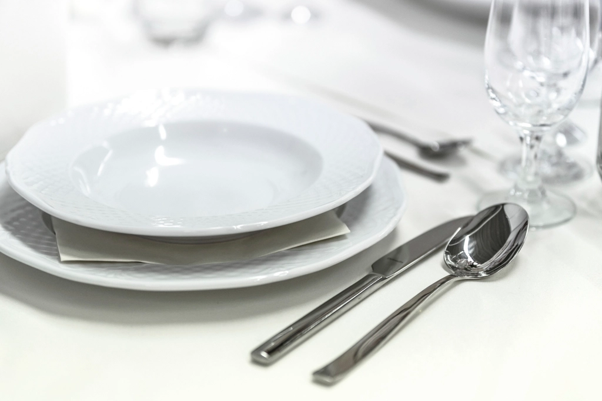

①福島の食材を一皿に
相馬原釜港で水揚げされる鮮魚や、大玉村の「あだたら豚」、県内の農園が育てる野菜や果物。当店は福島県内の生産者から届く食材を軸に、郡山でしか味わえない一皿を日々組み立てています。
詳しくはこちら

季節ごとに入荷する食材に合わせて内容が変わる、当店自慢のおまかせコース。ワインペアリングと合わせて、その日だけの一皿をゆっくりとお楽しみください。
(コース料金:お問い合わせください)
コースの詳細を見る★★★★★
「地産地消のお店で、カウンターでお店の方と会話しながら楽しめました」
Googleマップの口コミより(匿名化)
★★★★★
「イタリアンという枠に留まらずイノベーティブを続ける姿勢に、毎回驚かされます」
Googleマップの口コミより(匿名化)
所在地:ご確認中/営業時間:ご確認中/定休日:ご確認中。お電話またはお問い合わせフォームにて承ります(詳細はご確認中)。下記地図もあわせてご確認ください。